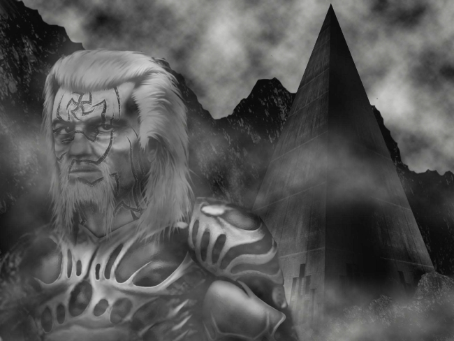

Kiss (Part 1)
by
Andy Robertson
To Out (Part 1) — the first story in this series.
"Kiss me."
Adrift. He tries to turn, tries to look around, but something is wrong. Something just out of the field of his eyes ... but he can not see: can not, somehow, turn his head: and his vision, straining to one side, tangles in the tattoos that twine up her thighs and spread down her belly like vines, limning flesh that glows like a glass of wine before a light.
Not Freya, not Mirdath, could be so beautiful.
She takes him comfortingly in her arms, wiping out the fears.
"Kiss me here."
To the fires and the darkness; to the mountains that scream in the Night; to the weeping monsters sucking the sores on the knees of the great Watchers; to the mother-pits where the manshonyaggers are healed and reborn; to the strange lights and the dark gaps in the air; to the black gardens of the Eaters; to the icy wastes; to the troll-kin and the beasts; to the unknown and ever-changing Night Land, two Hundreds went Out.
Seventeen returned, scarred and changed by experiences beyond words and beyond thought, beyond any recounting but the dry spooling of the Helms' records, their telling compressed into a few terabytes by algorithms not well optimised for the task — for no optimisation can be possible for this task — that can have caught only a fraction of the available information. No pattern matching was available to direct them, not as a man's eye will flick round and focus on an enemy, an unknown, or a woman, and even after the most careful study by the Scholars, so little makes sense and nothing is sure.
And what is this they do, that they say?
How can the things these Seventeen do be right?
But. Victory.
Call it, proclaim it, cry it. Not in an aeon have so many returned, from so far Out.
She opens herself, and welcomes him again.
How can this night, any night, continue for so long?
It is a victory. And no study of a mechanical record, no interrogation by the Masters, no parley with the Scholars, will suffice now.
The folk of the Pyramid, themselves, must look into the eyes that stared into the Night. They must clasp the hands that struck down monsters, embrace what rigid armour cramped, feast what was coursed as meat, tease speech from mouths that were locked shut in the dark, and whisper into ears that strained in the empty silence. They must heal what was wounded and warm what was frozen, and with touch and speech and praise and many gentle things, make of those who went Out one people again.
And they may take instruction. They are open, ready to receive something new, for the first time in an aeon. From every city in the Redoubt, the people come. Young men hope for a knowledge and guidance that excels old wisdom, old men seek to study a wonder, children ask their parents for new stories, and women come to gaze, to smile, to talk, and to dream of touching, eager to pardon every strangeness and mark every word and every move. The tall daughters of the Great from High Aerie, and the slim dancers and storyspinners from the fringes of the Dead Cities, and all the most beautiful from the thousand cities between, come by any excuse and by any means, laughing and daring one another on.
Her touch is so cunning. Yet her speech is best. Her soul seems closer to her face, less covered and less disguised, than any other woman's ever.
He cannot stop looking at her or touching her, with childish uncontrol, and each caress begets a return. She will not retire from communion, nor let him fall back or rest.
This celebration is in the inmost place, in the greatest, the midmost, City.
Between the hanging gardens and the domes that pretend under a false black sky, there is an open glade. At one fringe, curved glass hides the Night: and if the great wall-windows that in ages past looked on the naked Land now gaze only on a cybernetic simulation, the Great who throng here will never admit it or speak of it. Black roses and white moths dance in a breeze sweet as a girl's sigh. Water falls and spreads among flowered trees, and a rich sward of moss, more precious and more rare than any rug of a lifetime's knotting, drinks the spray and cushions the bare feet of the company. All the Seventeen are here, and a thousand who have come to honor them. The Great, the Masters of every guild, arrayed in sober robes of every tint: bloodroot for the Watch, glass-sapphire for the Scholars, argent for the Eugenicists, iron-grey for the Stress Masters, and many others.
Byssos is here, the Master Monstruwacan, purple-garbed, narrow-eyed, with some dark thing riding his mind and thoughts. His gaze flicks again and again at the Returned, as they stand not far from him. He can look into the souls of other men, but the mind of one who has been prepared and gone Out will ever after seem blank as glass, even to a Monstruwacan. So he looks and mutters and speiks to his peers: and you may see their troubled hearts and their debate, and how the arcs and zones of their power grind against each other.
It is whispered that he was a central mover in the cabal that sent these men Out. But it is not known whether he is pleased. You might even suspect he feared some thing. You might even suspect he feared the Seventeen.
He remembers first seeing her, one moving signalling body among the so many trapped into deathly stillness. He remembers pursuing her down strange paths: and the sound of rain, falling all round, falling through what seemed the very lungs of Mother Redoubt, falling a little even into this room where she drew him, here, in the centre of those vast spaces. Oh, that ancient, gentle, sound.
He remembers finding her again. And again, as he moved abroad with his Brothers to spread the message of new life. And he remembers leaving the great celebration with her, at his master's command.
But where is this place, soft, curved, bathed in interior rains?
He is Onn, the lieutenant of Scyrr. He has been Out — but his mind leaps away from those memories instantly — he has been Out. Yes. He has been in the Night Land. But he never knew there was a reflection of the Land, a place within the Redoubt, as strange and mysterious as the Land and in like wise inhabited by miracles.
Each of the Seventeen is strangely scarred. And they no longer seem to move like men.
Some of the marks of Preparation are still upon them. The gaunt starvation of metabolic recoding leaves them whip-thin and wire-muscled. The devices that webbed their bodies and that cannot now ever be fully withdrawn, the monitors and the tracers and the pacemakers and the other pneumatechne that held them secure against the low-level threats of the Land, still dwell within them. Each carries the Capsule in his wrist, and it can never be taken out now for it is not merely a sac of venom in this era but the artificial umbilicus of its bearer's soul. It is an age and an age since the Eaters were slow enough to be foiled by poison alone, and to block their dart the union of spirit and body must break instantly, without any lingering pause, as the capsule is bitten and a shock through the network of implants grants the soul freedom. This surgery can never be undone. These men will bear the Capsule for the whole of their life, until it is plucked out by a Captain as they ride the last road to a Hero's funeral.
But the Preparation was only the first layer of their wounding. They have been drawn upon like palimpsest.
Everywhere across their skin are crooked lines, like spiral flowers, gouged deep. These are not yet fully healed, and they shine red on the lightning-white of their flesh. Indeed it seems these wounds do not wish to heal, and for all the Doctors' care they are yet red and fresh, not bleeding and not infected or angry. Like strange jewelry.
Alone, each red spiral seems meaningless, but their arrangement, their coordination across the whole body, tells of something alien and strange. It is as if someone had wished to clothe them in a net of pain, removing every possibility of a contact with the world outside their skin that was other than agony, immersing them in a new reality.
The air around them is bitter and sharp with a new scent, harsh and alive. They move so fast, so surely. They are seen to kiss each other, in strange wise.
They have been examined long, and it has been proven they are human, wholly human. Nothing but what is human dwells within them. But they are so strange.
In the long month since the Seventeen returned, those red spirals have appeared on the flesh of more and more of the young men of the Redoubt. Cut with razors, kept fresh.
Even on some of the women. More and more of the most beautiful young women.
She holds him against her breast, and lets him suck, gently. The tiniest stream of woman's milk, like honey-water, pale and sweet and cloudy, wets his lips: and it seems no wonder but mere nature that she should be budding so.
For a little while her belly is riper, and her flesh even softer, as if she is quickening with a child.
An illusion, surely. Then she is the same again, laughing.
Here is Scyrr, the leader, the greatest of all.
He is not a man broad or tall. He wears the web of new scars on his body, fylfots and gammadions cut there like the geoglyphs that pattern the stone flesh of the Watchers, over a second, more ancient, testament. For he has been Out twice, as has no other man ever.
Eighteen years since, he was one of a company that went to the Outer Lands, on some whispered mission. He was the only survivor, the only one returned, and he has dwelt since then with a knowledge and a madness that has made him the intimate of Scholar, Monstruwacan, and poet, and raised him among the greatest of the Redoubt, though his formal rank remains a humble Captain. And a year ago, now, he went out again, with two hundred selected followers. For what cause, on what agency, and how it may be connected to the great things moving in the darkness, no-one dare guess. And now he is returned again.
Does he remember the Night Land? Does he remember the messages he gave and the messages he received? Does he remember some nightmare that makes the great Redoubt, for him, seem less real and solid than a mist of dream? No clue can be gleaned from him.
Each of the others is the same, each is changed. Lovers and old friends do not know them.
Behind him, in the soft dark room like glass and flesh, unseen by him, seen by her, there are onlookers.
They are thin, small, still, quiet. Robed in grey. Moving as one. They are all the same. Every face among the onlookers is the same face.
Is it a man's face or a woman's face?
Is it a face of one too old or too young to be either?
Is it a mask?
And now the formal time of feasting is ended, the entertainment, the speeches and the honours.
Tonight the Masquers have played The Voice of the Lacuna, passing the dead doll that is love from hand to hand. And how often the Great looked sideways at their Heroes, as Vinya confronted one monster after another and poisoned each with a shred of her heart.
In truth, they were asking by their looks: was it thus, in the Land? and, was it thus? But not one clue do the Seventeen give back.
The common lights darken, and streamers of jale and violet cross a mist of ulfire in the high vault of the roof. Moths and night-flyers stream there phosphorescent, and a spray of scented plant-life hovers in the air. All formality is ended, and by custom, and by this light, men and women may speak freely, and not as polite strangers.
"Kiss me again.
"Kiss me, as you kissed each other, in the Land.
"Kiss me here."
Now one approaches, and she pays her address to Onn, the lieutenant of Scyrr.
This one is different. There is an energy and a pain about her moving body that does not seem to be a germinal part of this celebration of wealth and glory. For all its beauty, her strong face holds subtle shadows of ... alienage? Yet these refuse to declare themselves, and flee when she is examined. She is never still or in repose, and her movements are so graceful that no flaw in her tint or shaping could be apparent, if there was any flaw. Hers is not the anonymous perfection of the daughters of the Great, but something else, something intriguing.
He smiles, with his new face, where what seem new organs and new features have been cut by no gentle hand. They talk, smiling.
From the other women near there is a little ripple of envy for her. Those who can see with a certain vision, as some here can, might note how those envious women begin, without knowing that they do it, to imitate her posture, her expression, and the way she holds her hands. But they are far, far, behind her in skill.
"But it seems I terrify you." Gleefully.
"Why, respected lady? You are beautiful."
"You are frightened of me."
"No. Now you insult."
"I bore you, then."
"Why yes. You may go hence, if you will. I have answered the same questions a hundred times, and in truth I will not repeat myself again."
"Ha! You will woo the Examiners, not us poor women?"
"Patience, patience, us poor men must beg."
"Always begging, it seems, forever. But tell me, recite, repeat, what are these scars?"
"I cannot speak of what happened in the Land, respected Lady. Not to touch on vital things. It is Forbidden."
"You are so marked, all over? Did they write their runes on all your flesh? You look so strong, but you limp. I can tell you are hurt."
"No. Changed."
"How changed, pray? Taught never ever to speak sense?"
Then his loud, delighted, purely human, laugh. Stretching his face back to the proper shape of a human face.
The people nearby, all of them, cannot help but instantly echo, imitate, and obey this laugh. They are so relieved and so very happy to hear one of the Seventeen simply laugh.
"But look at my wrists, respected Sir. Look quickly." However daringly thin a robe may be, an honorable woman is properly covered from neck to ankle, and her arms shrouded decently in her sleeves. But now her palms flash, gracefully as a butterfly's wing, and in the light of glowing corals on the walls and the flying moths high in the canopy of the roof, by the ultraviolet wavelengths that the Land's unbounded ecology has used as biological signals for aeons, he can see thin jale lines running up her arms, on or under the lightning-white flesh there.
"You see, I am marked as you are, and marked everywhere. I wonder if your ordeal was worse than mine?
"And I have seen you kiss each other. You, who went Out. Men, kissing men, without shame. Is that what men did, in the Land? Don't you desire women any more?"
"Yes. But your kindness and your kisses can not be as the kisses of the Land, respected Lady."
"You are sure?"
She moves and laughs, smiles and talks, very skillful, very beautiful. Displaying herself and her mind. And what her body cries out to his is not respected Sir. It is clear to those who see clearly that she is not what she claims to be, and that she must be an impostor here among the delicately-reared daughters of the Great. She should not be here. But since she is here, somehow she must have been allowed, permitted, some one must have required such a one. Do they perhaps know each other? Are they of past acquaintance? Perhaps that is it. They were so swiftly at ease with each other. Though a Hero should not dally with a woman of this sort. Should not have been expected to dally with a woman of this sort.
Onn knows all this. He knows that a Hero should cleave to the highest, the noblest, the most beautiful mate, and reject one like this. He knows what is expected and what is right, by ancient custom.
Now he starts, and twists like a broken machine.
From those watching, there is something like a patter of applause.
Scyrr watches.
By ancient custom this tryst should be nothing. Indeed by ancient custom there is no limit on the licence permitted one who has been Out. They may meet and woo any woman, and thousands will pursue them. But it is a licence rarely taken, for a man does not plunge into Hel for the hope of unknown woman's flesh. Not a man of the Redoubt, not by the ancient customs.
Scyrr watches men, watches women. Though he has nothing of the Night-hearing, he never needed that trick to understand another person completely. It is not by speech, and not by thought, that he knows. Rather, it is that everyone shouts out loud, all the time, continually, in another language, and in that language no-one but him can lie.
Humans perceive each other through five parallel channels: by the speech of the mouth; by the expression on the face; by the vibrations of the soul, called the Night-speech; by the drifting scents and tides and sweats of the flesh; and by the turnings and posings of the body. And for most of the inhabitants of the Redoubt in this era, only vocal speech is a conscious thing. The messages of the face, of the flesh, of the soul, and of the body pass in and out continually, but they pass on a level below thought, caught and analysed by the under-minds and presented to the ruling center of consciousness as emotions or moods, not as data.
A few people have the Night-hearing strongly enough to be intermittently conscious that they are telepathic, and when two of these marry an unfortunate, a Seer, may be born, for a life of agony and duty and an early death, or perhaps for the glory of the purple and a place in the Tower.
But in Scyrr it is almost the reverse of this. He can give up the Word, as all can who are permitted to live after the third month in the womb, but nothing has ever whispered to his soul. From earliest youth, even before it was twice-burned away in the Preparation, he has been utterly Night-deaf, lacking even the slightest and most subliminal hints from the minds that surround him. Perhaps the part of his soul or of his brain that was meant to sense those hints was twisted to other channels, and that is why he learned to speak in other ways.
He remains where he has always been, at the center of himself. It is not the soul or the tongue or the flesh or the face that he understands so very surely. For the tongue lies, the face lies, the flesh is cleansed and scented with lies, and even the soul lies. But the body does not lie, not to him. Everything real is of the body.
Quiet for a while, she lets him rest, and cuddles close. He is fainted, or sleeps.
Scyrr is thinking.
Remembering his youth, his conversations, after his own manner of speech.
Remembering, when the broken and bleeding partisans in those conversations became too numerous, and the wise old folk gave him a secure place to thrive.
Remembering his homecoming, when at last he went Out, and found, in the Land, those who could speak truthfully.
Remembering when he returned to Mother Redoubt, to discuss, to converse, to reason, and to spread that truth. And he found a few who could manage some stumbling dialogue, some poor reply to his questioning. Some of these failed and backslid: a promising cadet turned aside to the arms of his doxy: a stout veteran seen breaking down at last in weeping. But with great labour and care he found a few, and he took them Out again.
Scyrr, the twice-exiled, is now once more returned. And now he will teach these, his own people, to speak to him. He will teach them the truths he learned in the Land. At last, they will listen.
He is full of love.
And Scyrr watches his man Onn, and Onn's whore.
Scyrr has never touched or known a woman, only his Brothers. A man may achieve honesty in battle, or simply without meaning it, but a woman's speech is always a lie. But he reflects again, as he watches so slight a thing as Onn and this woman talking, how the Redoubt exists only for for this thing. Ultimately only for this feeble thing, which could not exist in the Land, and which therefore created the Redoubt, to shield and cherish and surround itself. This weak thing, the Lie of lies, which he has never been part of at all.
All of Her eternal might exists to guard, to feed, to support and couch and clothe, this thing.
It will be simple to undermine, to break, and to transform this thing. And when it is changed and become properly a part of what is coming, the great labyrinth it created to hide in, the extended phenotype that it spun around and by the white flesh in which it bathed and danced, will still be there, will be his.
So Onn may be permitted to continue. It will be useful.
His eyes meet Onn's, for an instant. And an instant later Onn and the woman have accepted their permission and are moving, leaving, with one intention, an intention that defies courtesy and convention, dishonors those gathered here to give honor, and strikes the hospitality of the Great in the face. So simply and quickly, without farewell, breaking free of every polite lie and mesh of kindness, in a zone of silence, they pass from the company, between the ferns and flowers and gentle lights, and leave.
Now she raises her streaming head to speak.
"Do we kill this man?"
Many voices answer, very quiet, whispering as one, scarcely to be heard over the rain.
"Continue."
Related stories: Out, by Andy Robertson.
Marks, by Andy Robertson.
© 2003 by Andy Robertson.
Artwork © 2003 by Martin Isitt.